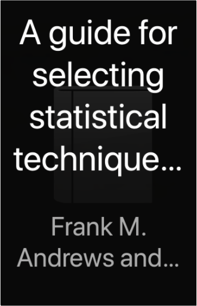

Sight Reduction Tables for Marine Navigation Volume I [1] Lattitudes 0 - 15, Inclusive. NP 401[2]Hydrographer of the Navy Sight Reduction Tables for Marine Navigation Volume I [1] Lattitudes 0 - 15, Inclusive. NP 401[2]Hydrographer of the Navy   Sight Reduction Tables for Marine Navigation Volume II [2] Lattitudes 15 - 30, Inclusive. NP 401[2]Hydrographer of the Navy Sight Reduction Tables for Marine Navigation Volume II [2] Lattitudes 15 - 30, Inclusive. NP 401[2]Hydrographer of the Navy  Sight Reduction Tables for Marine Navigation Volume III [3] Lattitudes 30 - 45, Inclusive. NP 401[3]Hydrographer of the Navy Sight Reduction Tables for Marine Navigation Volume III [3] Lattitudes 30 - 45, Inclusive. NP 401[3]Hydrographer of the Navy Time Traveler's WifeAudrey Niffenegger This is the extraordinary love story of Clare and Henry who met when Clare was six and Henry was thirty-six, and were married when Clare was twenty-two and Henry thirty. Impossible but true, because Henry suffers from a rare condition where his genetic clock periodically resets and he finds himself pulled suddenly into his past or future. In the face of this force they can neither prevent nor control, Henry and Clare's struggle to lead normal lives is both intensely moving and entirely unforgettable. Nineteen Eighty-FourGeorge Orwell Hidden away in the Record Department of the sprawling Ministry of Truth, Winston Smith skilfully rewrites the past to suit the needs of the Party. Yet he inwardly rebels against the totalitarian world he lives in, which demands absolute obedience and controls him through the all-seeing telescreens and the watchful eye of Big Brother, symbolic head of the Party. In his longing for truth and liberty, Smith begins a secret love affair with a fellow-worker Julia, but soon discovers the true price of freedom is betrayal. A guide for selecting statistical techniques for analyzing social science dataFrank M. Andrews and others Lonely Planet New York City EncounterGinger Otis What Will Your New York Encounter Be?  The Physics of Vibrations and Waves, 6th EditionH. J. Pain The Physics of Vibrations and Waves, 6th EditionH. J. Pain The main theme of this highly successful book is that the transmission of energy by wave propogation is fundamental to almost every branch of physics. Therefore, besides giving students a thorough grounding in the theory of waves and vibrations, the book also demonstrates the pattern and unity of a large part of physics.  Handbook of KnotsDes Pawson Handbook of KnotsDes Pawson Whether you want to learn some loops or practise plaits, this guide reveals everything you need to know about knot tying. With clear instructions and step-by-step photographs, you can be sure that you will select the correct type of rope. From fishing to camping, sailing to mountaineering, this handy guide will show you which knot to use. |
 Made with Delicious Library
Made with Delicious LibrarySpringfield, State zipflap congrotus delicious library Doddridge, Edward